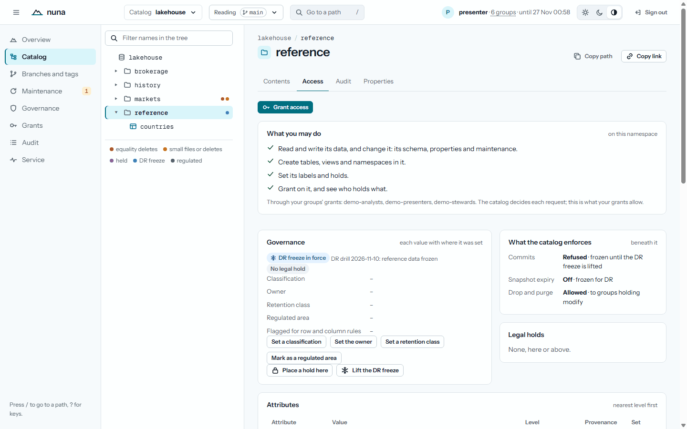

Freeze and unfreeze for disaster recovery
Stop every commit and cleanup beneath a catalog, namespace, table or view while a disaster recovery reconcile runs, then lift the freeze.
A DR freeze stops writes and maintenance on everything beneath the object it is set on, until it is lifted. It is the first and last step of recovering in the DR region (Back up and recover). Only platform operators may set or lift one.
Before you begin
- You are a platform operator: your token carries a group named in
nuna.security.platform-operator-groups. - A reason to record, such as the reconcile's ticket. It is at most 1,000 characters.
What a freeze stops
Beneath a frozen object, each of these is refused with 403 ForbiddenException and audited with the reason dr_freeze:
| Action | Message |
|---|---|
| Commit, create or register | Writes to object are frozen for DR reconcile: reason |
| Drop a table | Table namespace.name is frozen for DR reconcile: reason |
| Rename into a frozen namespace | Namespace namespace is frozen for DR reconcile: reason |
| Undrop, or a purge claim by the maintenance worker | The namespace of object is frozen for DR reconcile: reason |
| Ask for maintenance on a table | Table table is frozen for DR reconcile: reason |
| Unregister a table | Table table is frozen for DR reconcile and cannot be unregistered |
| Remove a branch or tag | ref is frozen for DR reconcile |
The maintenance policy of each frozen table shows the guardrail frozen for DR reconcile, which turns off snapshot expiry, orphan scans, compaction and manifest rewrite. Reads go on as before.
Freeze a namespace
-
Open the namespace's Access tab.
Go to the namespace, such as
equitiesintrading, and select the Access tab. -
Select Freeze for DR.
The dialog Freeze equities for DR says: "A DR freeze stops every commit and cleanup beneath this namespace until it is lifted. Platform operators set it."
-
Write the reason and select Freeze.
Type the reason in Reason, as it will be recorded and select Freeze. With no reason the dialog says
Write the reason.
The tab now shows DR freeze in force and the button Lift the DR freeze.
From the Governance page you can also freeze a namespace by its path: on the Holds and freezes tab, select Freeze a namespace for DR, type the path in Namespace, such as equities.daily, and select Next.
Send PUT to the namespace's dr-freeze (curl, reference):
curl -sS -X PUT "$NUNA/management/v1/catalogs/trading/namespaces/equities/dr-freeze" \
-H "Authorization: Bearer $TOKEN" \
-H "Content-Type: application/json" \
-d '{"reason": "DR reconcile in progress"}'The answer is 200:
{"attribute":"dr-freeze","level":"namespace:…","value":"DR reconcile in progress","provenance":"management-api","set-by":"…","set-at":"…"}For a nested namespace, join its levels with %1F: namespaces/equities%1Fdaily.

Freeze a catalog, table or view
The console freezes namespaces only. Freeze a catalog, a table or a view through the API, at the object's own path:
curl -sS -X PUT "$NUNA/management/v1/catalogs/trading/dr-freeze" \
-H "Authorization: Bearer $TOKEN" \
-H "Content-Type: application/json" \
-d '{"reason": "DR reconcile in progress"}'
curl -sS -X PUT "$NUNA/management/v1/catalogs/trading/namespaces/equities/tables/fills/dr-freeze" \
-H "Authorization: Bearer $TOKEN" \
-H "Content-Type: application/json" \
-d '{"reason": "DR reconcile in progress"}'A view's path ends /views/view/dr-freeze.
Lift the freeze
To find the freezes standing in a catalog, open its Governance page, which lists each with its path, reason, who placed it and when, and Lift beside it; or send GET to …/governance/dr-freezes. What an operator reads there is freezes only, never legal holds.
On the namespace's Access tab select Lift the DR freeze. The dialog says "Lifting the freeze lets commits and cleanup run again beneath this namespace." Select Lift the freeze; the console reports Freeze lifted. On the Governance page, select Lift beside the freeze.
curl -sS -X DELETE "$NUNA/management/v1/catalogs/trading/namespaces/equities/dr-freeze" \
-H "Authorization: Bearer $TOKEN"The answer is 204 with no body.
If it fails
| Answer | Cause |
|---|---|
400 Missing field reason: a non-empty string | The body has no reason, or an empty one. |
400 The request body must be a JSON object | The body is JSON but not an object. |
400 The request body is not JSON: … | The body is not JSON. |
403 only platform operators may call setDrFreeze | You are not a platform operator. Lifting says liftDrFreeze. |
404 dr-freeze is not set on this namespace | A DELETE where no freeze is set. |
404 Namespace does not exist: …, Table does not exist: …, The given warehouse does not exist: … | The path names no such object. |
See also
- Back up and recover: where the freeze fits in recovery.
- The Governance page: holds and freezes together.
- Governance API.
How this page was checked
Written from catalog-server/src/main/java/nuna/catalog/server/governance/GovernanceRoutes.java, ManagementGuard.java, the commit and lifecycle refusals in catalog-core and catalog-server, and the console's governance.js and panels.js, checked against commit b3e8582f on 2026-11-26.
The demo's frozen namespace reference was seen in the console. The curl examples were not run: they change the demo's state.